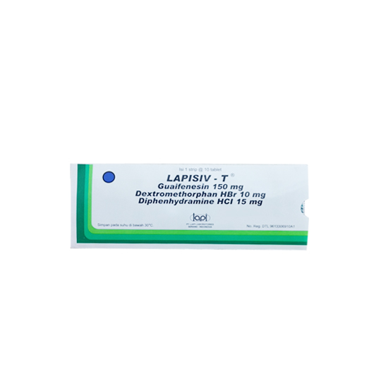

Batuk Alergi
Batuk alergi adalah batuk yang terjadi karena adanya reaksi sistem kekebalan tubuh terhadap alergen atau zat pemicu alergi. Kondisi ini lebih berisiko terjadi pada orang yang memiliki riwayat alergi di dalam keluarganya. Batuk alergi biasanya berlangsung lama, bahkan hingga berbulan-bulan.
- Gejala : Biasa nya batuk kering dan rasa gatal pada tenggorokan
- Penyebab : Karena adanya reaksi sistem kekebalan tubuh terhadap alergen atau zat pemicu alergi.
-
Pengobatan Konvensional
Difenhidramin
- Kandungan : Diphenhydramine 25 mg; 50 mg
- Dosis : Dewasa dan anak usia ≥12 tahun: 25–50 mg, 3–4 kali sehari. Dosis maksimal 300 mg per hari, Anak usia 6–12 tahun: 12,5–25 mg, tiap 4–6 jam, Anak usia 2–5 tahun: 6,25 mg, tiap 4–6 jam.
- Indikasi : Diphenhydramine bekerja dengan cara menghambat kerja zat alami tubuh yang berperan dalam munculnya reaksi alergi, seperti mata berair, bersin, batuk, hidung meler, atau hidung tersumbat, karena alergi atau batuk pilek.
- Kontra indikasi :
- - Konsultasikan terlebih dahulu dengan dokter sebelum memberikan diphenhydramine kepada orang lanjut usia. Lansia lebih rentan mengalami efek samping, seperti mengantuk, pusing, atau sulit berkemih.
- - Jangan langsung melakukan aktivitas yang membutuhkan kewaspadaan, seperti mengemudikan kendaraan atau mengoperasikan alat berat setelah menggunakan diphenhydramine, karena obat ini bisa menyebabkan pusing dan kantuk.
- - Konsultasikan dengan dokter perihal penggunaan diphenhydramine oles jika Anda menderita cacar air atau penyakit campak.
- ESO : Beberapa efek samping yang mungkin muncul setelah menggunakan diphenhydramine, seperti; Mulut, hidung, atau tenggorokan terasa kering, Kantuk, Pusing, Mual atau muntah, Sembelit, Sakit kepala, Gelisah atau gugup, Rasa senang yang berlebihan, tetapi tidak wajar, terutama pada anak-anak, Dada terasa sesak atau tertekan, Hilang nafsu makan, Ruam, sunburn, rasa terbakar atau menyengat, pada kulit yang dioleskan obat,
-
Pengobatan Herbal

Teh Herbal Madu Hangat
- Menurut penelitian, madu merupakan obat batuk anak alami yang bisa meredakan batuk. Melansir Medical News Today, sebuah studi membandingkan anak-anak batuk yang diberi madu dan obat batuk jenis dextromethorphan. Dari hasil penelitian, madu lebih memberikan efek lega di tenggorokan ketimbang dextromethorphan.

Jahe
- Jahe merupakan obat batuk kering alami. Rempah-rempah yang kerap digunakan sebagai bahan jamu atau bumbu memasak ini punya formula anti peradangan. Studi menunjukkan, senyawa anti peradangan pada jahe dapat melemaskan membran di saluran udara. Sehingga, intensitas batuk bisa berkurang.